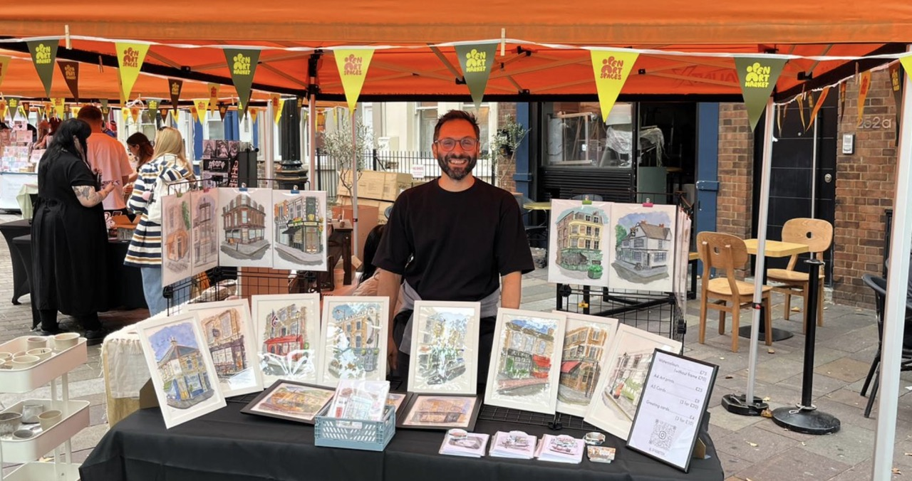

Notes from a beginner stallholder
11th October 2025
A few days ago I had the opportunity to run a stall at the Open Art Market in Portobello Road. This is one of the regular art markets run by Open Art Spaces [insert link]. They provide a (lovely!) space for new and emerging artists to showcase their work and reach new audiences, in very popular areas of London.
I started my artistic journey not too long ago. To the extent that I was tempted to write "artistic" in quotes. Impostor syndrome, and all that…
I needn't have worried. I'm really pleased to say that the feedback I received on market day has been great. Lots of encouragement, and kind words for my work. Not every conversation turned into a sale, and I wasn't quite expecting that.
So, it was a great experience. I enjoyed being able to showcase my work to such a varied audience and get their direct feedback. I had great interactions, and I must admit that every sale was a real thrill (and I had a few sales). The whole atmosphere was very positive and energetic, and the day went by really quickly (which is always a good sign).
But, as it was my first time at an art market, the learning curve was definitely quite steep, both in the preparation phase and on the day. I think I got a few things right, while others I can definitely improve on.
So I thought I'd share 9 lessons (or, rather, insights) I'll try to take on board for next time. These are based on my experience and geared toward artists that sell visual artwork, so your mileage might vary.
Anyway, here goes...
- Presentation is key, especially for more expensive pieces. Getting a few (IKEA) frames for my original watercolour artwork added value to the pieces and helped people visualise how they would fit in their homes.
- Value and perception of value are two very different things. Just because you've spent a long time producing a particular original artwork, it doesn't necessarily make it more appealing than, say, a cheaper print. This is normal, and you shouldn't feel disappointed if this happens. Use it as a signal for your next market.
- Having a range of products and different price points is very helpful. Cheaper pieces can bring people in, they're less intimidating and encourage impulse buys. And who doesn't like impulse buys?
- Similarly, people love offers, like 3 for 2, etc. Use them!
- Stick to a theme. Most of my artwork was focused on London buildings, especially pubs and bookshops. But I had included a couple of pictures of Italian houses and one of Copenhagen. In hindsight, these didn't really fit with the overall theme of the stall.
- Have at least a couple of "entry points" where people can engage with your work, for example a couple of boxes with prints for people to browse through. I had just one, and it got a little bit crowded at times. Having more would provide more opportunities for people to engage.
- If (and only if) you're happy to do commission work, do advertise that clearly. People love to have custom work done, and in this way you would be able to start talking about it there and then.
- Have business cards that people can take away. People like them and sometimes they work as a reminder to circle back to your stall. Have a few more cards than you think you'll need. I ran out midway through, sadly.
- Don't take it personally if you don't make a sale. Cherish the engagement with the audience, and maybe try to ask for some feedback. A nice word about your work is worth a lot. And some constructive criticism can be very helpful for you to know your audience better.
That's it. I hope you've found these insights helpful. If you choose to run a stall at an art market, best of luck! You’re going to enjoy it.
Thanks to Open Art Spaces for this opportunity. And thank you to all who stopped by and engaged with my work, those customers who bought a thing or two, and to friends who came to see my stall and to support me on the day (you rock!).